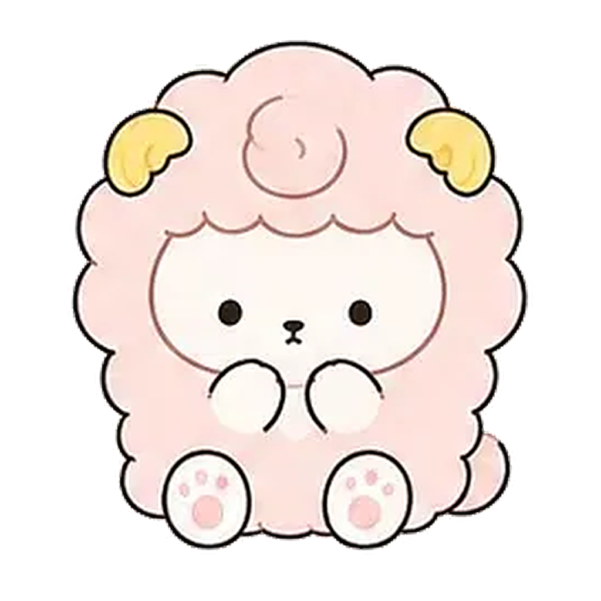
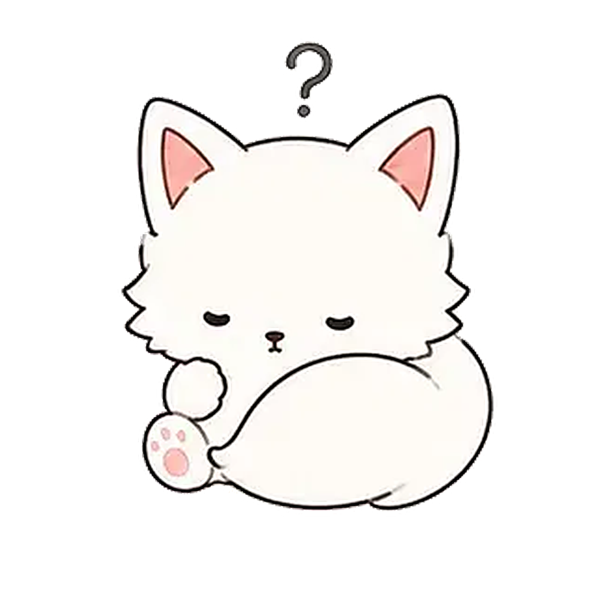
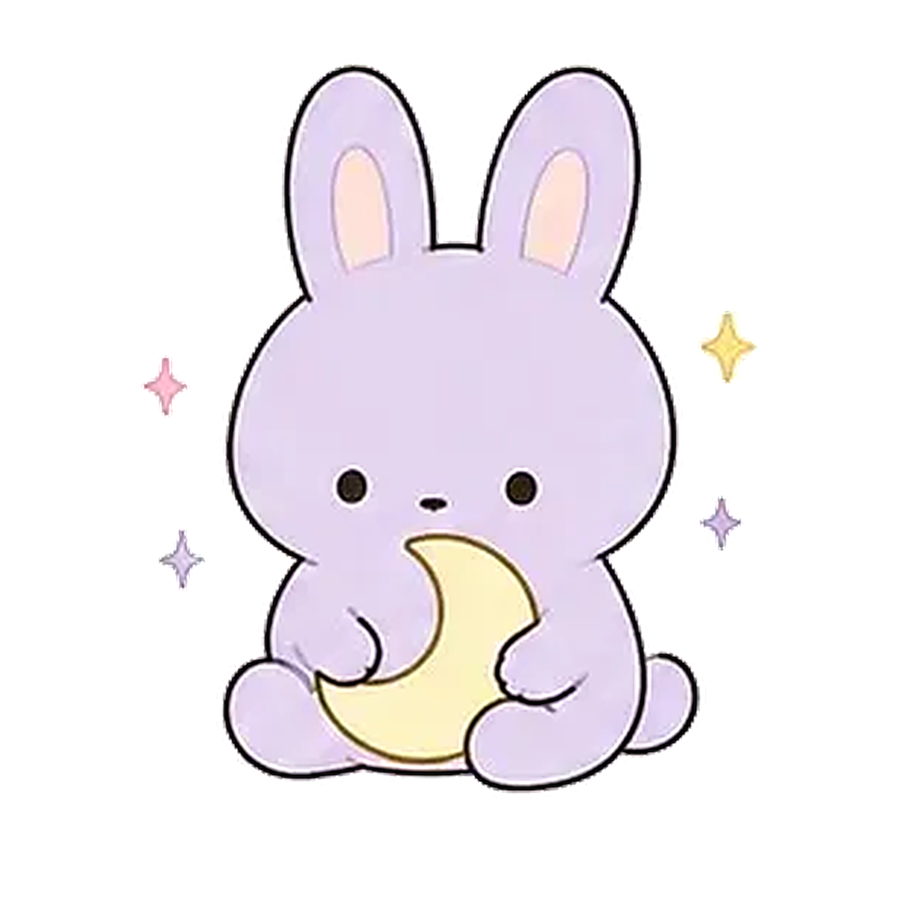
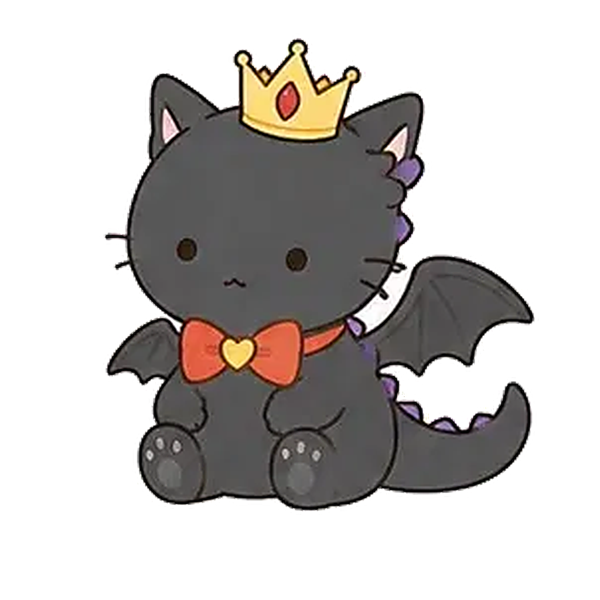
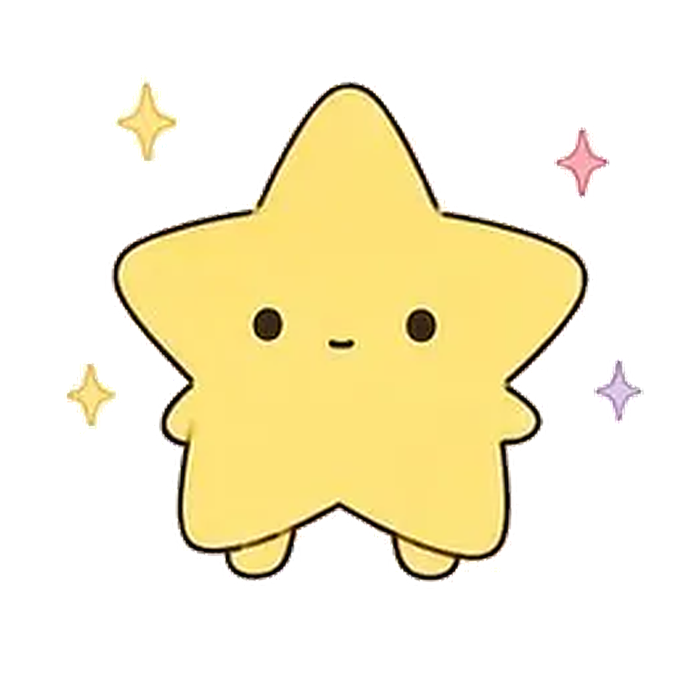
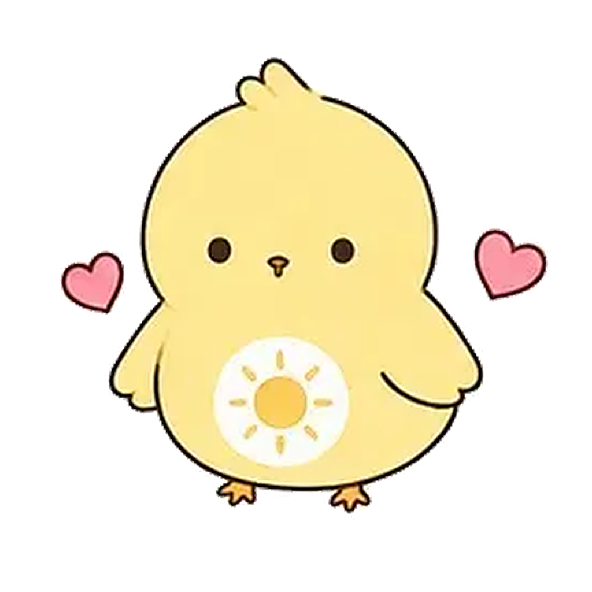

★ どきどきの やさしいくま
うらなう ♡
★ 干 支 × タ イ プ 詳 細 ★

巳年（へび）
ISFJ
巳年生まれの どきどきの やさしいくま
みんなの 心のお守り
目立たない場所で、こっそり大切な人を守るタイプ。その献身は天が必ず見ています。多くは語らず、ただそばにいるだけで人を救う温もりの持ち主。傷つきやすくて、だからこそ他人の傷もわかる、優しさの権化。
巳年生まれ の 特徴
◆ 巳（へび）の星
知的で神秘的。直感と分析力に優れ、執念深く目標を達成する。 ISFJ「どきどきの やさしいくま」の資質と掛け合わさることで、独自の個性が生まれます。
巳年 × ISFJ の 全国偏差値
🌹
モテ偏差値
偏差値 66
上位38%
💬
コミュ力
偏差値 64
上位66%
💰
金運
偏差値 75
上位22%
💖
一途度
偏差値 75
上位22%
🧠
天才度
偏差値 58
上位38%
💪
メンタル最強
偏差値 58
上位91%
🖤
ヤンデレ度
偏差値 80
上位6.3%
恋 愛 と 相 性
♡ うんめいの子
ESFP・ESTP の子
⚠ ニガテな子
ENTP・ENTJ の子
♡ あなたが好きになる時
自分の小さな変化に気づいて言葉にしてくれる人に堕ちます。「髪切った？」より「今日いつもより元気ないね」が殺し文句。
★ あなたの運命タイプを 診断する ★
生年月日 × 20の質問で 詳しく占う
どきどきの やさしいくま の 干支別
子年
ねずみ
丑年
うし
寅年
とら
卯年
うさぎ
辰年
たつ
午年
うま
未年
ひつじ
申年
さる
酉年
とり
戌年
いぬ
亥年
いのしし
巳年 の 他の タイプ
さみしがりの ものしりねこ
INTJ

ぼんやりの てんさいねこ
INTP
しずかなる つきうさぎ
INFJ

つよがりの ゆめみひつじ
INFP
こわがりの ぼうけんりす
ENFP
おせっかいな おひさまひよこ
ENFJ

やさしがりの くろねこじょおう
ENTJ
てれやの いたずらあらいぐま
ENTP
ふあんしょうの まじめいぬ
ISTJ
てれやの くーるおおかみ
ISTP
ないしょの おしゃれねこ
ISFP
てれやの しっかりいぬ
ESTJ
つかれやの ゆめみるユニコーン
ESFJ

さみしがりの げんきとら
ESTP

ふあんしょうの きらきらほし
ESFP
運命図鑑 ウンメイ
｜ MBTI × 干支 で占う 運命キャラ図鑑